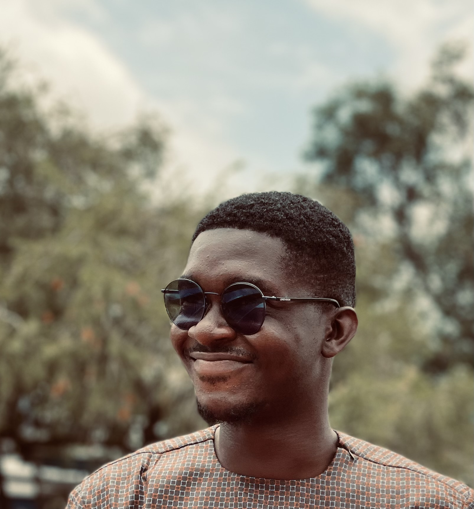

Summary
I am a hardworking and self-motivated programmer with good communication and teamwork skills .
Education
- Presbyterian Boy's Secondary School-Legon(2017-2020)
- Bachelor of Science, Computer Science - Kwame Nkrumah University of Science and Technology(2020-present)
- Codetrain Africa (2023-present)
Work Experience
Skills
- Intermediate HTML,CSS and Java
- Familiar with designing user interfaces
- Prompt Engineering (familiar with natural language processing tools such as ChatGPT).
- Familiar with using flutter to build mobile apps.
- Good verbal and written communication skills
- Good leadership skills and the ability to work in a group.
- Good critical thinking and analysis skills
Hobbies
Contact Me